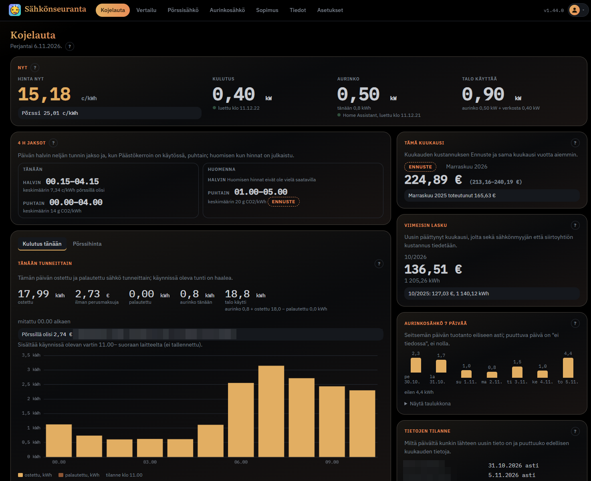
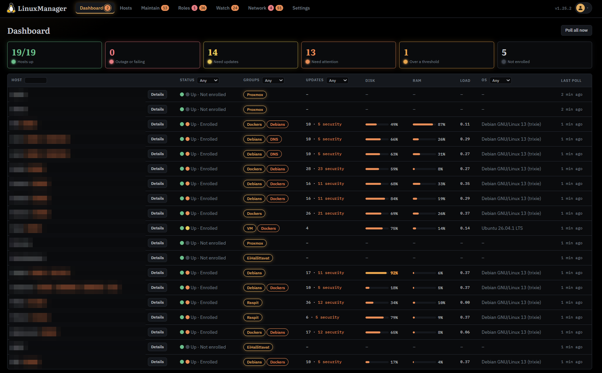
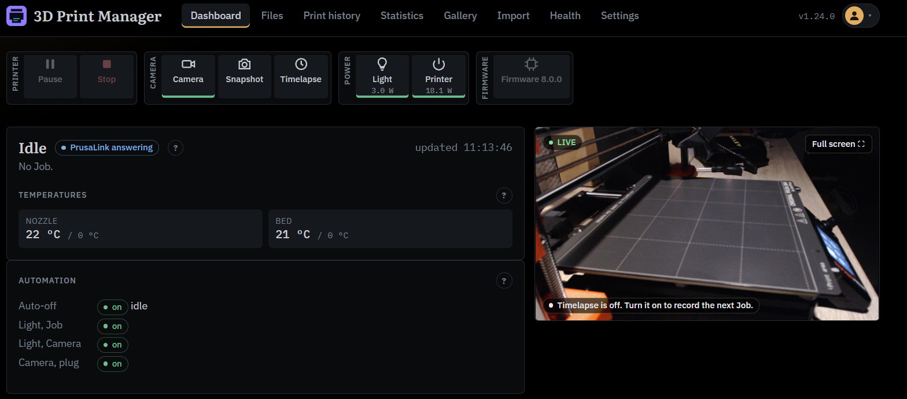

Demot ja jatko
Mitä Claude Codella voi rakentaa?
Lopuksi kouluttaja näyttää kolme omaa harrastusprojektiaan. Ne on tehty vapaa-ajalla omaan kotiverkkoon, eivät työssä. Jokainen on rakennettu Claude Codella samalla työtavalla, jonka opit moduuleissa 9 ja 10:
- Idea puidaan Clauden kanssa kysymys kerrallaan (grilling).
- Claude kirjoittaa määrittelyn ja pilkkoo sen tiketeiksi.
- Claude toteuttaa tiketin kerrallaan, testit ensin, ja kouluttaja katselmoi ja testaa jokaisen muutoksen.
Kouluttajan työ oli päättää, mitä tehdään, vastata Clauden kysymyksiin, tarkistaa tulos ja testata se oikeassa ympäristössä.
Sähkönseuranta
Verkkosovellus, joka lukee kotitalouden sähkölaskut ja kulutustiedot sellaisinaan, vertaa vuosia keskenään ja ennustaa tulevaa kustannusta. Sivut ovat suomeksi.
- Mitä Claude teki: lukijat usean sähköyhtiön laskuille, vertailu- ja ennustelaskennan sekä testit, jotka tarkistavat luvut esimerkkilaskuja vasten.
- Opetus: anna Claudelle esimerkkitiedosto (henkilötiedot poistettuina) ja odotettu tulos. Silloin testi kertoo, onko vastaus oikein, eikä sinun tarvitse arvata.
- Noin 140 committia kolmessa viikossa.

LinuxManager
Verkkosovellus, joka pitää joukon Linux-palvelimia päivitettyinä ja valvottuina SSH:n yli yhdeltä sivulta: päivitykset, yhteiset asetustiedostot, levytila, Docker-kontit ja tietoturvatarkistus.
- Mitä Claude teki: koko sovelluksen, sen ajastetut työt ja SSH-yhteydet, esikatselun ennen jokaista muutosta palvelimelle sekä estolistan palvelimille, joihin sovellus ei saa koskea.
- Opetus: vaaralliset toiminnot suunnitellaan ensin. Kysy suunnitteluvaiheessa Claudelta, mitä voi mennä pieleen ja miten muutoksen näkee ennen kuin se tehdään.
- Noin 240 committia kuukaudessa.

3D Print Manager
Sovellus, joka seuraa 3D-tulostinta sen oman rajapinnan kautta: tulostushistoria, pistorasioiden ohjaus ja kameran kuva samalta sivulta. Se korvasi aiemmin käytetyn valmisohjelman.
- Mitä Claude teki: tulostimen tilan seurannan, historian tallennuksen, kameran kuvan ja testit, jotka ajetaan ilman oikeaa tulostinta.
- Opetus: Claude ajaa kaikki testit, joihin se pääsee, ja antaa ihmiselle vain ne vaiheet, joihin tarvitaan oikea laite.
- Noin 70 committia kahdessa viikossa.

Mistä oppia lisää
- Claude Coden dokumentaatio ja sen parhaat käytännöt
- Clauden ohjekeskus: tilaukset, käyttörajat ja asetukset
- Anthropic Academy: Anthropicin ilmaiset verkkokurssit
- Kehotesuunnittelun opas (moduuli 2 syvemmälle)
- Matt Pocockin skillit, joita käytettiin moduulissa 9
- Tämän kurssin lähdekoodi ja Kopioitavat: github.com/Marcozarg/ClaudeKurssi
Paras tapa oppia on ottaa yksi oma, pieni ja toistuva työ ja tehdä se ensi viikolla Clauden kanssa.
Harjoitukset
1. Oma idea kysymys kerrallaan
Valitse yksi pieni työkalu, joka helpottaisi työtäsi, esimerkiksi skripti, joka listaa vanhenevat varmenteet. Kirjoita Claudelle: "Haluan tehdä työkalun, joka <kuvaus>. Kysy minulta yksi kysymys kerrallaan, kunnes tiedät tarpeeksi, ja kirjoita sitten lyhyt määrittely: tavoite, syötteet, tulosteet, mitä ei tehdä." Vastaa kysymyksiin.
Näytä esimerkkivastaus
Claude kysyy esimerkiksi: mistä varmenteet haetaan (Windowsin varmennesäilö, tiedostot, etäpalvelimet), kuinka monen päivän päähän katsotaan, mihin muotoon tulos halutaan (CSV, sähköposti, näyttö) ja ajetaanko työkalu ajastettuna. Lopuksi se kirjoittaa määrittelyn, jossa on myös rajaus, esimerkiksi "ei uusi varmenteita". Jos se ei kysynyt rajauksesta, pyydä se lisäämään.
2. Oma jatkosuunnitelma
Kirjoita kolme toistuvaa työtehtävää, joissa Claude voisi auttaa. Merkitse jokaiseen, riittääkö claude.ai (moduulit 0-5) vai tarvitaanko Claude Code (moduulit 6-10), ja mikä tieto tehtävässä on sellaista, jota ei saa liittää (moduuli 0).
Näytä esimerkkivastaus
- Tikettivastausten luonnokset: claude.ai riittää; asiakkaan nimet ja yhteystiedot poistetaan ensin.
- Lokien virheiden selittäminen: claude.ai riittää; lokit anonymisoidaan.
- PowerShell-skriptien ylläpito repossa: Claude Code; tunnukset pysyvät salaisuusvarastossa, ei skriptissä eikä keskustelussa.
Lisä: ennen kuin rakennat oman
- Aloita pienestä: yksi skripti tai yksi sivu, ei koko järjestelmää.
- Pidä työ gitissä alusta asti (moduuli 8), niin jokaisen muutoksen voi perua.
- Tarkista organisaatiosi ohjeesta, saako työtehtävää tehdä tekoälyn kanssa ja millä tilillä.